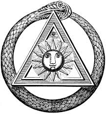

The Freemasons, and all secret societies, took symbols not just from Egypt, but from religion as well. Turn to the stained glass window to your left to see an example. The window is from a church in Brooklyn, made in 1867. It is seemingly innocent, but the architecture is adorned with Masonic symbols. The two panels on the bottom show duality, just like the columns to the temple earlier. The circle within the triangle is seen here on both the flask, and the window.
